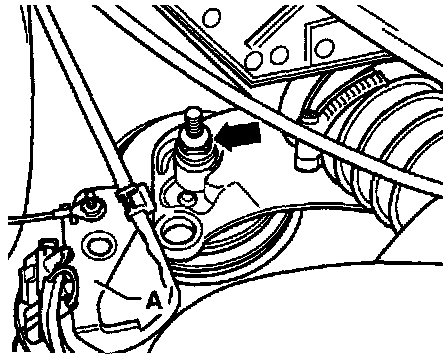
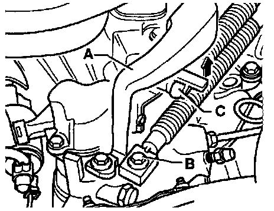
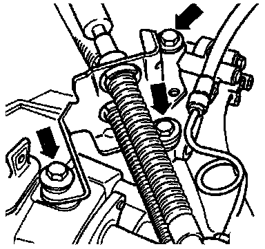
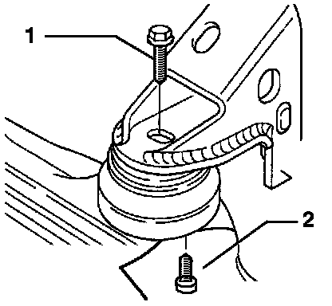
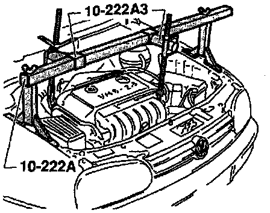
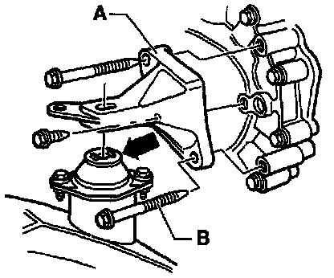

Removal
CAUTION: On vehicles equipped with an anti-theft radio, make sure you know the correct radio activation code before disconnecting the battery.1. Disconnect the battery ground strap and remove the battery.
2. Remove the power steering fluid reservoir from the battery bracket.
3. Remove the battery bracket.
Connection For Speed Sensor And Back Up Light Switch:

4. Disconnect the harness connectors from the Speedometer Vehicle Speed Sensor (VSS) (arrow 1) and the Back-Up Light Switch (arrow 2).
5. Disconnect all other electrical connections and ground connections from the engine/transmission mounting bolts.
Engine Mount Bolt:

6. Remove bolt (arrow) at right side engine mount.
7. If applicable, remove bracket "A" for the harness connector.
Balance Weight And Gear Selector:

8. Remove balance weight "A" and disconnect gear selector cable "B" from the gear selector lever.
9. Disconnect gate selector cable "C" at actuating arm/relay lever by pulling the tab in direction of the arrow.
Selector Cable:

10. Remove cable bracket bolts (arrows) at transmission.
Clutch Slave Cylinder:

11. Remove clutch slave cylinder and lay to one side.
12. Secure slave cylinder with wire.
CAUTION: Do not open the clutch hydraulic system.
Bolt For Transmission Mount:

13. Remove hex bolt "A" on left transmission mount.
NOTE: To remove hex bolt "A", disconnect coolant overflow reservoir and lay it aside.
Transmission Support:

14. If applicable, remove transmission support "A" from transmission.
15. Remove connector attachment plate from front transmission bracket.
Engine Mount Bolt:

16. Remove bolt (for bracket) on front engine mount.
17. Remove engine/transmission upper attachment bolts.
Engine Support:

18. Mount engine support bridge and adapter.
CAUTION: To prevent damage, disconnect all hoses and wiring in the vicinity of the engine lifting eyes before installing the adapter hooks.
19. Tighten the support bridge assembly and slightly lift engine/transmission assembly via spindles.
20. Remove sound deadening pan below engine/transmission assembly.
21. Remove the starter.
NOTE: Before removing lower mounting bolts, first disconnect the power steering hose at the transmission.
22. Remove front bracket.
23. Disconnect axle shafts from axle flanges (both sides), turn the steering wheel all the way to the left, and tie axle shafts aside, as high as possible.
CAUTION: Take care not to damage surface protection.
Support Plate For Transmission:

24. Remove support between transmission and engine (if applicable) by removing bolts "A" and "B".
25. Remove small clutch cover plate behind axle flange.
26. Push engine/transmission assembly as far to the right as possible.
Transmission Mount:

27. Remove transmission bracket "A" from transmission.
28. Using both engine support adapter spindles, lift engine/transmission assembly until the exhaust system just contacts the heat shield.
29. Remove transmission mounting bolt "B" from transmission mount.
CAUTION: Be sure not to damage brackets for operating cables.
Transmission Jack:

30. Press engine/transmission assembly rearward toward bulkhead over pins "A".
CAUTION: Be sure not to damage power steering hose.
Transmission Mount:
31. Remove lower mounting bolt "B".
32. Using both engine support spindles, lower engine/transmission assembly back to previous position, then position at an angle using left spindle.
33. Remove clutch cover plate.
34. Remove bolt at engine/transmission mount above right axle flange.
35. Assemble transmission jack with transmission support 3282 and 02A adjustment plate 3282/8 with holding elements.
Adjustment Plate:

36. Place 02A adjustment plate 3282/8 on transmission support 3282.
NOTE: Plate fits in one position only.
37. Align arms of transmission support with holes in adjustment plate.
38. Install holding elements "A" according to diagram on adjustment plate.
39. Place transmission jack under vehicle. Arrow symbol "B" points forward (see diagram).
Transmission Adjustment Plate And Jack:

40. Align adjustment plate parallel to transmission and position safety bracket against transmission.
NOTE: If transmission support 3282 is not available, the transmission can be removed and installed with VAG 1383A transmission jack.
41. Remove bolt for lower engine/transmission attachment.
42. Press transmission off alignment dowel sleeves and lower carefully while pushing forward slightly on engine/transmission assembly.
CAUTION: When lowering transmission, avoid damaging power steering lines.